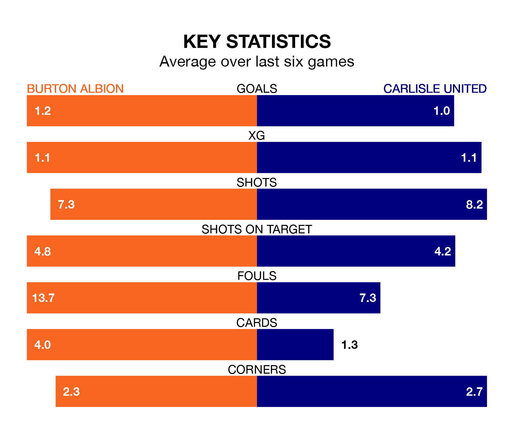

Carlisle United make the journey to the Pirelli Stadium to play Burton Albion on late Tuesday looking to pick up points to end their six-game losing streak.
Carlisle's struggles have left them with no points from their last six EFL League One matches, while their opponents have earned eight from a possible 18.
Carlisle are bottom of the table after 31 games, of which they have won four and drawn eight, earning 20 points.
Burton are six places ahead of United in 18th, with nine wins and eight draws putting them on 35 points.
With 26 goals in 31 games so far this season, the away side are scoring at below the league average rate with 0.8 goals per game. And they are conceding more than average, letting in 51 goals at a rate of 1.6 per game.
Albion are also below average scorers, with 0.9 goals per game, compared to a league average of 1.3. They have conceded 1.3 goals per game.
Burton's last match was on Saturday, a 2-1 win against Bristol Rovers, with Ciaran Gilligan and Mark Helm getting the goals for the Brewers.
Carlisle lost 1-0 against Portsmouth last time out, also on Saturday.
Tuesday's match will be refereed by Craig Hicks, who has taken charge of eight EFL League One games so far this season, issuing three red cards and booking 26 players. He has awarded two penalties.
He is yet to oversee a match featuring either Burton or Carlisle this season.
Updated: 13:30 (UTC), 12/02/24